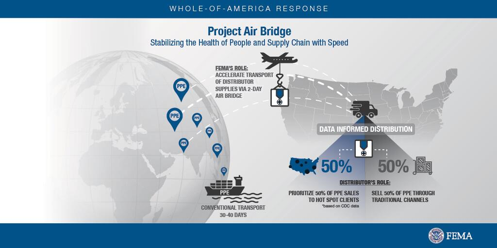

Is the US government seizing PPE supplies to resell them with a markup?
This copypasta has been flying around on reddit for a while, and I'm wondering how much there is to it.
It's more than that.The Federal Government under Trump thinks they have no duty to help states
at all , that they should in fact
actively compete against them to funnel money to an even more elite group than the 1%. The following is
not my work.Here's the scam as it exists: Hospitals say feds are seizing masks and other coronavirus supplies without a word.(1) This is in addition to the Fed stealing supplies from shipments from states, and acts of piracy abroad.(2)
1.)Eliminate oversight of the spending of nearly a trillion dollars of tax dollars.(3) 2.)Acquire the authority to command which businesses get which contracts.(4) 3.)Have trusted people stand up companies through which the money can be funneled (3 week old company, founded through a loan approved via the Coronavirus Stimulus bill, is now the center of medical supply distribution): (5) 'I don’t want to overstate, but we probably represent the largest global supply chain for Covid-19 supplies right now,' he said.'We are getting ready to fill 100 million-unit mask orders.'(16) 4.)Have the federal government sell, at a reduced price, its strategic stockpile to the new companies, run by your buddies.(6) (15) 5.)Have the states bid on the supplies, driving up the price.(7) 6.)Have the federal government spend taxpayer dollars to ship supplies purchased from China to these brand new private companies.(8) 7.)Eliminate the competition.Attack any company that doesn’t play ball.(9) ----- States are having to smuggle in supplies aboard sports teams jets, and escort them with state police (10).Is it really to this point that we're going to have to have states deploy the national guard to protect their shipments and supplies and treat the federal government like the enemy?This is no different from the Somalian government stealing food sent by the United Nations and cartels selling it illegally.(11) Except in this situation FEMA is the cartels and the banana republic is the United States.Also regarding Trump removing the watchdog overseeing the $2 trillion coronavirus bill?In 1998 the Supreme Court ruled line item vetos are unconstitutional.(12) His excuse?The Take Care Clause.And the Take Care Clause just says the President can't make his underlings do stuff that's against the law.It underscores that the executive is under a duty to faithfully execute the laws of Congress and not disregard them.(13) If you don't know what that's about, Trump wrote a line item veto into the stimulus bill that he was going to ignore the oversight provisions in the bill and do it himself.(14)
Posted On: 2020-05-29T00:00:00

Content Date: 2020-05-29
Download Date: 2021-05-30
Document ID: L0C04CNB6